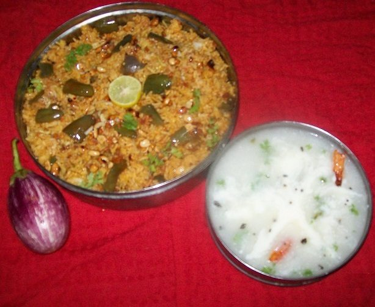

Contains: milk, peanuts, sesame, mustard
Ingredients
Quantities for 4.
- 1 1/2 cups Ricesona masuri, cooked and cooled, grains separate
- 350g Eggplantlong purple, cut into 4cm batons
- 1 medium, sliced Onion
- 8 byadgi Dried Red Chillifor the masala
- 2 tbsp Chana Dalfor the masala
- 1 tbsp Urad Dalfor the masala
- 1 tbsp Coriander Powder
- 1/3 cup, grated Dried Coconut
- 1 tbsp Sesame
- 1 tsp Poppy Seedsoptional
- 2cm piece Cinnamon
- 4 Cloves
- 1 tsp Stone Flowerdagad phool, the smoky note that makes it vangi bathoptional
- lime-sized ball, soaked in 1/2 cup hot water Tamarind
- 1 tbsp, grated Jaggery
- 1/2 tsp Turmeric
- 3 tbsp Ghee
- 2 tbsp Groundnut Oil
- 1 tsp Mustard Seeds
- 3 tbsp Peanutoptional
- 12 Curry Leaves
- 3 tbsp, chopped Coriander Leavesoptional
- to taste Salt
Cookware
stovetop, kadhai, blender
Checked against the ingredient list for ten allergens: milk, egg, fish, crustaceans, tree nuts, peanuts, sesame, mustard, soy and gluten. Brands vary, so read the label on anything new to you.
Before you start
- Cook the rice with a little less water than usual and spread it on a tray to cool for at least 20 minutes. Warm rice clumps when you fold the masala in.
- Soak the tamarind in hot water 20 minutes and strain out a thick pulp.
- Cut the eggplant last and hold the batons in salted water so they do not brown.
- The masala powder can be ground a week ahead and kept in a jar; it is the backbone of the dish.
Method
- Dry-roast the chana dal and urad dal over medium heat 4 minutes until reddish gold and fragrant, then tip onto a plate.
- In the same pan roast the red chillies, cinnamon, cloves and stone flower 1 minute, then the sesame and poppy seeds 30 seconds, then the dried coconut 2 minutes until sandy brown.Roast in that order. The coconut goes last because it burns fastest.
- Cool completely, add the coriander powder and grind everything to a fine powder. You should have about 6 tbsp of vangi bath masala.Grinding while warm makes an oily paste instead of a powder.
- Heat the groundnut oil and 1 tbsp of the ghee in a kadhai. Crackle the mustard seeds, add the peanuts and fry 2 minutes until they colour.
- Add the curry leaves and sliced onion and fry 5 minutes until the onion is translucent and just catching gold.
- Add the drained eggplant batons and the turmeric, toss to coat, then cover and cook 8 minutes on medium, stirring twice, until the flesh is tender and the skin blistered.Do not add water. The eggplant should fry, not steam.
- Stir in the tamarind pulp, jaggery, 1 tsp salt and 4 tbsp of the ground masala. Simmer 6 minutes until the mixture is thick, glossy and pulling away from the sides.
- Fold in the cooled rice a third at a time, lifting rather than stirring, until every grain is evenly coloured.Use a flat spatula and a lifting motion. Stirring breaks the grains.
- Drizzle over the remaining 2 tbsp ghee, cover and let it sit on the lowest heat 5 minutes.
- Check the salt and sour, scatter the coriander leaves and serve warm with plain yogurt.
Storage
Keeps 2 days refrigerated. Reheat covered with a sprinkle of water, or eat at room temperature. Vangi bath is a lunchbox dish and holds up well.
Nutrition Medium estimate
Medium protein: 12 g a serving, 8% of the calories
| Per serving254 g | Per 100 g | |
|---|---|---|
| Calories | 627 kcal | 247 kcal |
| Protein | 12.5 g | 5 g |
| Carbohydrate | 81.8 g | 32 g |
| of which sugars | 9.9 g | 4 g |
| Fibre | 8.1 g | 3 g |
| Fat | 29.2 g | 12 g |
| of which saturated | 12.1 g | 5 g |
| of which unsaturated | 15.3 g | 6 g |
Ingredients given to taste count as zero, so the real figures run a little higher. Nearest database match used for curry leaves, jaggery, stone flower, urad dal. Estimated from raw ingredients using USDA FoodData Central.
More like this: Vegetarian Indian recipes · Gluten-free Indian recipes · Karnataka recipes
Times, yields, allergens and nutrition are guidance. Use your own judgement on doneness and on storing. More in About.